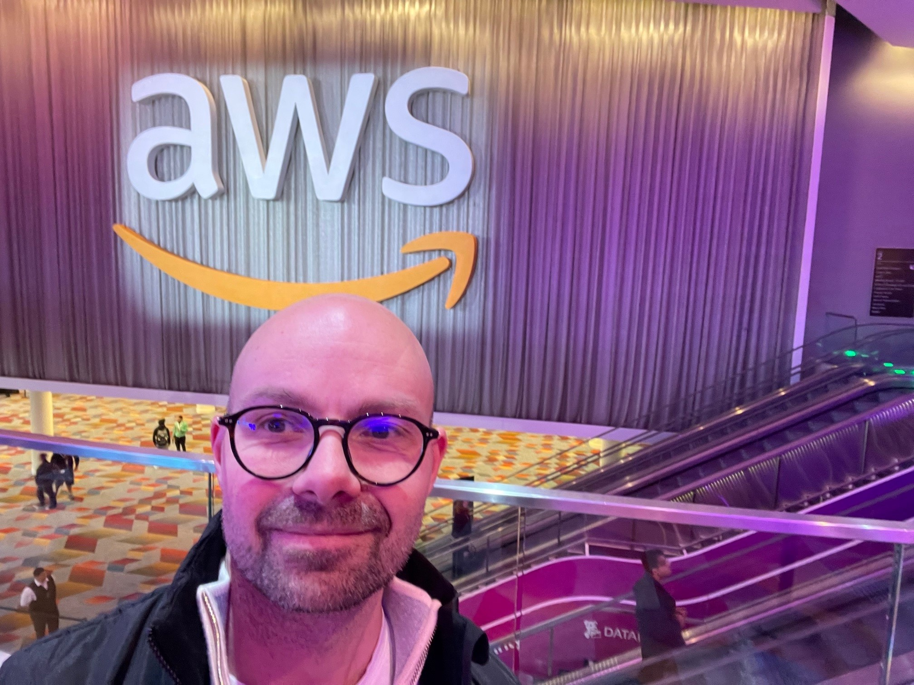

My Resume
Resume - Tor Lekven

Summary
I am a positive and curious guy who loves learning new things. I enjoy working in agile teams that solves problems and loves a chalenge
Education
- 2010-2012: Master of Management - BI Business School
- 2001 - 2005. Economics and information science. Universitetet i Bergen
- 2002: Entrepreneurship. Cornell University and Universitetet i Oslo.
- 1999 - 2000: University of Newcastle, Australia. Software Engineering and economics
- 1996 - 1999: Computer Science. University of Bergen. Bachelors degree
Work Experience
- 2020 - to date. DNB. Engineering Manager for Cloud Platform
- 2018 - 2020: DNB.Head of department - Banking Services
- Dec. 2017 - Jun.2018: DNB. Head of department - Customer Solutions
- 2014 - 2017: DNB. Senior Business Analyst in Customer Solutions
- 2007 - 2014: DNB. Project Manager and service responsible
Skills, certifications and training
- AWS Certified Cloud Practitioner 2022.
- Web development bootcamp 2023
- Product Owner certification 2018
- Scrum Master certification 2017